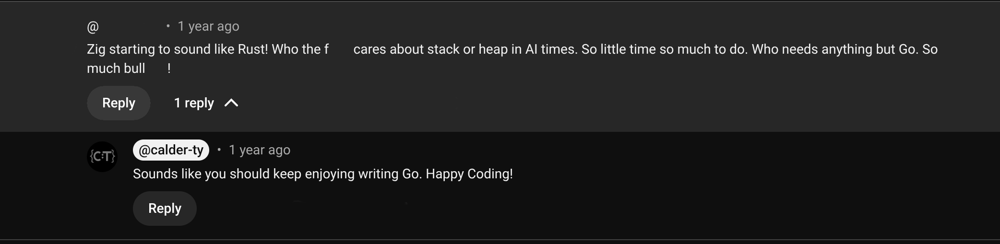

What makes software you can love?
Tyler Calder
Developer experience, also known as DX or DevEx, is just as essential as user experience for organizations looking to drive innovation and stay ahead of the competition.
– gitlab.com “What Is developer Experience”
The purpose of a programming system is to make a computer easy to use.
– Fredick P. Brooks

::: incremental - Software is a set of instructions that can alter the behavior of a programmable machine - The machine is just as integral to software as is the code ::: ::: notes - Here is a comment on a video I made about stacks and heaps and zig. (Comment has been deleted to protect this user, I don’t want people going and flaming him.) There is a tendency with developer experience/abstractions/easy way to do things to ignore what is really going on. Even more present in the day of AI coding, it is easier and easier to get away with not understanding what is going on with software. - The essence of software is that it is a set of instructions given to alter the behavior of a programmable machine. - Often things that provide ergonomics and developer expereince abstract away the machine, to make it simpler to use. Abstractions do not absove us of the responsibilty of understanding our machine. There are many who would argue that we should rely on experts who have already trod that ground. This is a mistake. - I don’t care if the machine is your x86 CPU, a CNC machine, or the Python Interpreter. You should be invested in learning how it works so that your code can interface with it the best it can. :::Tyler Calder:
- www.calder-ty.com
- Calder-Ty on Ziggit
- calder-ty@protonmail.com